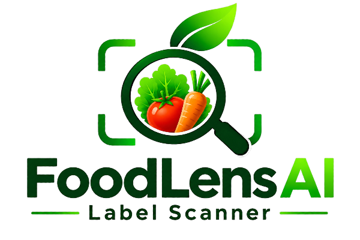

Ingredients can have different sources
Some ingredients, like gelatin or glycerin, may need more information about how they were made.

Search, type, or scan a label. Get a clear ingredient check for your diet and allergies.
Try an ingredient name or E-number, like gelatin or E471.
Choose an option below to scan, explore, or learn about ingredients
Choose what matters to you, then scan a photo or enter the ingredients.
Your selected photo preview will appear here.
Your diet or belief
Choose the profile you followAllergies (optional)
Select anything you need to avoidYour check is personal. No account needed.
Labels use codes, short names, and ingredients that can come from different sources. FoodLens helps you spot what may need a closer look.
Some ingredients, like gelatin or glycerin, may need more information about how they were made.
E-numbers, technical names, and tiny print can make it hard to know what is in a product.
Check a label against your selected diet and allergies, and review the ingredients behind the result.
Simple starting points for reading ingredient lists and using FoodLens.
Short answers about FoodLens, your privacy and how far you can trust a result.
Yes. You don't need an account to check a label.
FoodLens applies written rules to known ingredients. For items the rules cannot settle, AI can search the web and give a screening estimate with links to sources. It is not a personal religious ruling or product certification. A check can miss text or ingredients, and "no match found" never proves a product is allergen-free. Check official certification and the manufacturer, and ask a doctor or allergist about serious allergies.
AI may search for a general ingredient answer, but it cannot see a source the label does not name. Source-dependent items stay marked "Check" so you can verify them with the manufacturer or certifier.
They are shown separately from the ingredients. A "may contain" warning means traces could be present from shared equipment, so take it seriously if you have an allergy.
Only when you have an ingredient list to type in or a label to photograph. Without a list, FoodLens has nothing to check, so ask the seller.
Yes. Labels in other languages are read and translated to English, but translation can be wrong, so double-check unfamiliar words.
Treat the result as a starting point and trust the package and the manufacturer over FoodLens. If a rule looks wrong, tell the project team so it can be fixed.
Your photo and text. When you scan a photo, the image is sent to Google's Gemini AI to read the label. If an ingredient is unknown or marked "Check", that ingredient name and selected profile are sent to Gemini; Google Search may be used to find supporting sources. We don't save your photos, ingredient lists or results on our servers, and there are no accounts. "Recent checks" are kept only in your own browser and you can clear them anytime.
Terms. FoodLens is provided as is, for information only. AI estimates and web sources are not certification, medical advice, dietary advice, or religious rulings. You are responsible for checking labels and certifications before you eat.
Start with common ingredients, everyday foods, and the labels we meet while shopping.
 Ingredient basicsGet to know what's in a labelExplore ingredients →
Ingredient basicsGet to know what's in a labelExplore ingredients →
 Food shoppingCheck the foods you bring homeStart a food check →
Food shoppingCheck the foods you bring homeStart a food check →
 Everyday foodsGet familiar with bakery labelsHow checks work →
Everyday foodsGet familiar with bakery labelsHow checks work →
 Ingredient sourcingSome ingredients need more contextSee our approach →
Ingredient sourcingSome ingredients need more contextSee our approach →
Photos hosted by Unsplash.